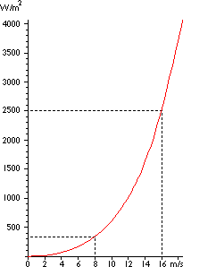

|
|
The
Power of the Wind:
Cube of Wind Speed
The wind speed is extremely important for the amount of energy
a wind turbine can convert to electricity: The energy content
of the wind varies with the cube (the third power) of
the average wind speed, e.g. if the wind speed is twice as high
it contains 23 = 2 x 2 x 2 = eight times as
much energy.
Now, why does the energy in the wind vary
with the third power of wind speed? Well, from everyday
knowledge you may be aware that if you double the speed
of a car, it takes four times as much energy to brake
it down to a standstill. (Essentially this is Newton's second
law of motion).
In the case of the wind turbine
we use the energy from braking the wind, and if we double
the wind speed, we get twice as many slices of wind moving
through the rotor every second, and each of those slices contains
four times as much energy, as we learned from the example
of braking a car.
The graph shows that at a wind speed of 8
metres per second we get a power
(amount of energy per second) of 314 Watts per square metre exposed
to the wind (the wind is coming from a direction perpendicular
to the swept rotor area).
At 16 m/s we get eight times as much power,
i.e. 2509 W/m2. The table in the Reference
Manual section gives you the power per square metre exposed
to the wind for different wind speeds.
|